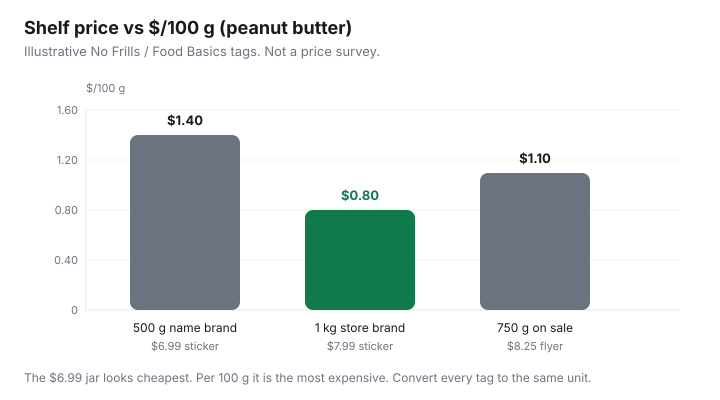

Food & Groceries · Canada
How to read unit prices like a pro at Canadian grocery stores ($/kg, $/L, $/100 g)
Canadian shelf tags still trick people who shop by the big number. A 500 g peanut butter at $6.99 looks “cheaper” than a 1 kg store brand at $7.99 until you read the tiny line: $/100 g or $/kg. Shrinkflation made that habit expensive. Packages got quieter; stickers stayed loud.
This is a metric playbook for tags you actually see at No Frills, Food Basics, FreshCo, and Costco Canada — not a U.S. ounce chart. Convert every comparison to one unit, keep a 20-staple price book, and only then decide whether a club pack or a flyer single wins.
Disclosure: There is no natural affiliate product in unit-price literacy. Grocery gift cards and cashback portals sometimes sit beside a discounter trip. Saving Optimizer may earn a commission if we later add those links. We do not currently claim grocer partnerships. A phone calculator is enough.
Key takeaways
- Compare $/100 g, $/kg, or $/L — never the package sticker alone. $1.00/100 g = $10/kg.
- Quebec requires unit pricing; most other provinces leave it voluntary, and banners mix units (ISED Office of Consumer Affairs).
- A mental price book of ~20 staples beats memory in aisle 6. Update it when shrinkflation moves the net weight.
- Club packs win only after waste. Produce sold “each” is a different game than produce sold by the kilogram.
- Flyer specials and Costco warehouse tags still lose to a cheaper store-brand unit price you will actually finish.
Why shelf tags lie when package sizes differ
The sticker answers “what does this package cost today?” The unit price answers “what am I paying for the food?” Those diverged as manufacturers quietly dropped 50 g here and 100 mL there. Innovation, Science and Economic Development Canada’s Office of Consumer Affairs (unit-pricing explainer, reviewed 18 Sep 2026) is blunt: without a standard unit, shrinkflation is hard to see, and Canadian stores do not all print the same measure.
Health Canada’s grocery-on-a-budget pages still put “compare unit prices” next to meal planning for a reason. StatsCan’s August 2026 CPI Daily (14 Sep 2026) had food from stores up 2.8% year over year — milder than the five-year climb, still enough that a 15% size cut feels like a price hike you cannot photograph unless you keep the old net weight.

Quick conversions you will use weekly:
- $/kg → $/100 g: divide by 10. $8.90/kg = $0.89/100 g.
- $/100 g → $/kg: multiply by 10.
- $/L → $/100 mL: divide by 10. Same trick for oils, milk, and juice.
- Missing tag: price ÷ grams × 100 = $/100 g. Price ÷ grams × 1,000 = $/kg.
Mixed units on one shelf: one yoghurt is $/100 g, the tub beside it is $/kg, the drinkable bottle is $/L. Convert before you “save.” Costco warehouse tags are often $/kg or per-pack — still convert to the same unit as last week’s No Frills photo.
Build a mental price book for 20 staples
You do not need an app. You need a note on your phone titled “good unit prices” for the SKUs you actually buy. Update it when a pack shrinks. The numbers below are teaching ranges for a discounter week in a large Canadian city — not a promise, not a Statistics Canada table. Photograph your local tags.
| Staple | Unit to watch | Teaching “good” band |
|---|---|---|
| Eggs (large) | $/dozen | Watch the dozen, then $/100 g if sizes mix |
| Milk (4 L) | $/L | Store brand usually wins; ignore 1 L convenience |
| Chicken thighs | $/kg | Flyer loss-leader weeks are the buy; freeze extra |
| Ground beef / turkey | $/kg | Compare lean %; extra fat is not free protein |
| Dry rice, oats, pasta | $/kg | Bulk or store brand; ignore “family” boxes that shrank |
| Canned tomatoes / beans | $/100 g | No name / Compliments / Great Value vs name-brand sale |
| Peanut butter, oil | $/100 g or $/L | The chart example lives here |
| Yogurt, cheese | $/100 g or $/kg | Large tubs win only if you finish them |
| Bananas, carrots, onions | $/kg | Usually cheaper loose by weight than “value” bags you waste |
| Coffee | $/100 g | Costco often wins if you drink it; freeze the extra bag |
Park the book inside the weekly grocery system. Sunday: check fridge, open Flipp, then only clip proteins that beat your book.
Club packs vs sale singles: the break-even math
Worked example (labelled): 1 kg store-brand peanut butter at $7.99 = $0.80/100 g. A 500 g name brand on sale at $4.49 = $0.90/100 g. The “sale” loses. A Costco 2 kg jar at $14.99 = $0.75/100 g — better, if two people finish it in six weeks. If a third of it oxidizes in a cupboard, your true unit price is $14.99 ÷ 1.33 kg ≈ $1.13/100 g. The discounter jar won.
Break-even rule: club pack unit price × (1 ÷ share you will eat) versus the sale single you will finish. If the leftover share is compost, you paid list. Same math as the Costco freeze-split-share guide.
Produce sold by unit vs weight traps
Grapes, loose carrots, and most meat are $/kg. Head lettuce, celery, pineapple, and some peppers are each. A “3 for $5” pepper deal can lose to loose peppers on the scale if the three are small. Weigh one in the bagging area (politely) or estimate: three 150 g peppers for $5 is $11.11/kg; loose at $8.80/kg wins.
Pre-washed salad is a convenience tax plus a compost subscription. A whole cabbage on $/kg looks expensive until you count edible days. Love Food Hate Waste Canada’s planning pages still beat any “value pack” of greens a couple will not eat.
How unit pricing interacts with flyer specials
A Flipp clip is not a unit-price win until you check the size. No Frills Won’t Be Beat and FreshCo’s 1¢ beat require identical (or comparable) items — same size. You can match a 750 mL to a 750 mL. You cannot match a club pack to a single and call it identical.
After the match, still look left: the store brand that was never on the flyer may be cheaper per 100 g. Price matching is a scalpel on national brands. Unit price is the operating system.
Phone calculator shortcuts for quick aisle decisions
- Type the sticker price.
- Divide by the grams (or millilitres) on the pack.
- Multiply by 100 for $/100 g or $/100 mL, or by 1,000 for $/kg or $/L.
- Compare to the other pack and to your price book. If it is within a few cents, buy the one you will finish.
- Skip the third comparison. Two SKUs is a decision; five is a hobby.
Some phones let you long-press the unit-price line on a photo of the tag. Fine. The arithmetic above still wins when Costco prints “$14.99” with 1.81 kg in a corner.
When Costco unit prices beat discounters (and when they don’t)
Costco usually wins on olive oil, coffee, frozen berries you will freeze-split, toilet paper, and many family meat packs — the pattern in Costco vs No Frills. It often loses on a clamshell of berries for two people, a giant salad kit, bakery you will not freeze, and any SKU whose unit-price gap is smaller than the extra drive.
Membership is a separate question (is Costco worth it?). Unit price does not care that you already paid $65. Waste does. Photograph the warehouse tag, convert to $/kg, then shop the weekly discounter for everything that failed the test.
Sources & date stamps
- ISED Office of Consumer Affairs, “Comparing food prices – Per unit pricing” (Quebec mandate; voluntary display elsewhere; shrinkflation rationale) reviewed 18 Sep 2026.
- Health Canada, Canada’s food guide — meal planning and grocery shopping on a budget (unit prices, lists, store brands) reviewed 18 Sep 2026.
- Statistics Canada Daily, CPI August 2026 (14 Sep 2026): food from stores +2.8% YoY.
- Love Food Hate Waste Canada, plan-it-out guidance (waste as a unit-price tax).
Frequently asked questions
Why do two jars with similar stickers cost different amounts per gram?
Package sizes moved. Shrinkflation often leaves the sticker familiar while the net weight drops. The unit price on the tag — $/100 g, $/kg, or $/L — is the comparison that survives that trick.
Is unit pricing mandatory in Canadian grocery stores?
Quebec requires per-unit pricing. In the rest of Canada it is largely voluntary. Innovation, Science and Economic Development Canada’s Office of Consumer Affairs notes that banners display it in different units, so you still have to convert to the same measure before you compare.
Should I always buy the bigger pack?
Only if you will finish it. A club pack that moulds is more expensive per edible gram than a smaller sale jar. Run break-even math against waste, freezer space, and how fast your household eats that SKU.
How do I compare a Costco pack to a No Frills sale?
Convert both to $/kg or $/L before tax where it applies, then add waste and the trip. Costco often wins pantry oils, coffee, and paper. It often loses on small produce you will not finish. Photograph both tags; do not trust aisle memory.
Do flyer specials always beat the store brand on unit price?
No. A name-brand flyer cut can still lose to no name or Compliments on $/100 g. Match identical sizes when you price-match, then still check the store-brand unit price on the same shelf.